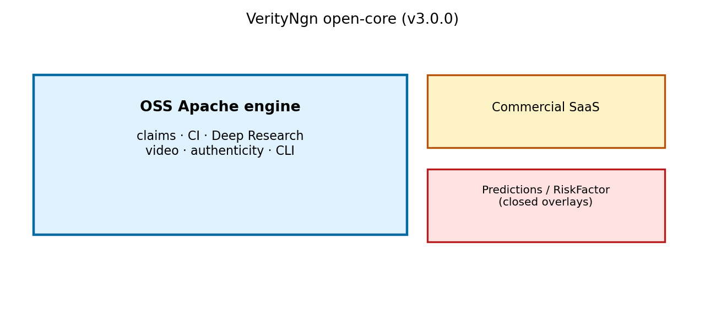
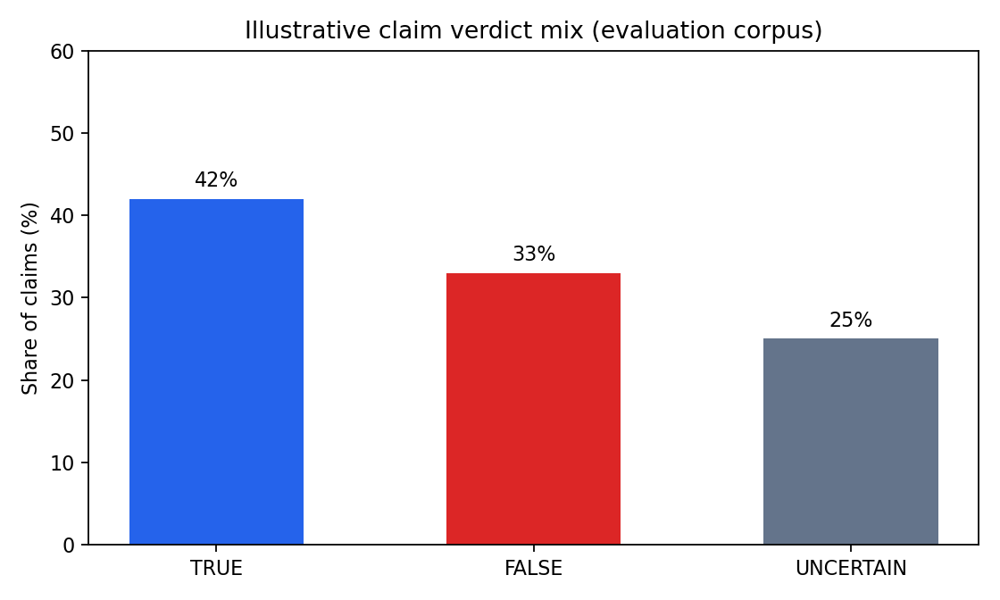
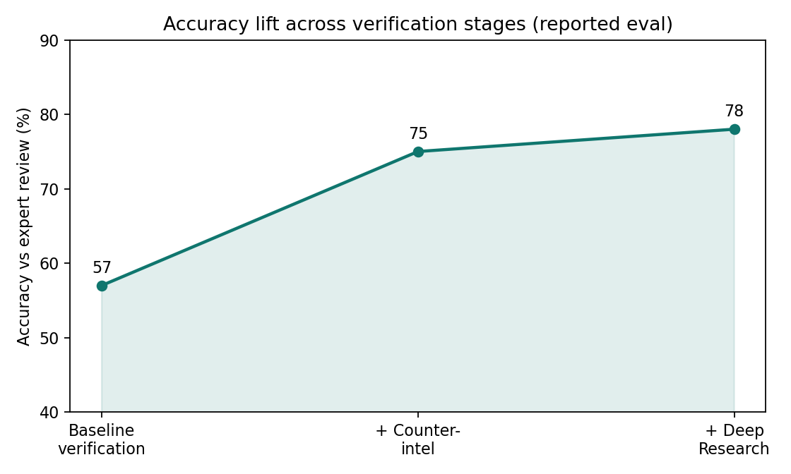

2026-08-29 · Apache-2.0 engine · HotChili Analytics



# VerityNgn OSS 3.0.0 — Public Engine Release Paper
**Authors:** HotChili Analytics / VerityNgn Research
**Date:** 2026-08-29
**Version:** 3.0.0
**License:** Apache-2.0 (engine); commercial overlays under separate terms
---
## Abstract
We release **VerityNgn OSS 3.0.0**, a standalone open-source multimodal engine for claim extraction and verification from video. This release restores **Deep Research** (grounded forensic summarization) to the public Apache tree, adds optional **authenticity** and **spectral voice** cues, and documents a clear open-core boundary: predictions and RiskFactor products remain closed overlays that **depend on OSS**, not the reverse. We do not claim earnings prediction, allocation factors, or lie detection.
**Keywords:** video verification, counter-intelligence, deep research, open-core, multimodal LLM
---
## 1. Motivation
Prior open-core practice left Deep Research and several authenticity cues on the commercial fork, while OSS drifted. Public distribution requires an impressive, drop-in engine (`pip install verityngn`) that communities can run without SaaS. Overlays for hosted multi-tenant delivery, predictions, and RiskFactor must build **on** OSS.

*Figure 1. OSS Apache engine vs closed commercial and predictions/RiskFactor overlays.*
---
## 2. System overview (v3)
```
Video URL or file
→ multimodal analysis + claim extraction
→ counter-intelligence (YouTube / press-release / Sherlock CI)
→ probabilistic verification (TRUE / FALSE / UNCERTAIN)
→ standard report (MD / HTML / JSON / PDF)
→ optional Deep Research (Gemini grounded pass + combined report)
→ optional authenticity / spectral / Face Landmarker cues
```
### 2.1 Deep Research (now in OSS)
`verityngn analyze <url> --deep` runs a counter-intel sanitize of `{video_id}_report.json`, then a grounded Gemini generation producing:
- `{video_id}_deep_private_report.{md,html,pdf}`
- grounding audit JSON
- combined TL;DR + DR + standard report when available
### 2.2 Authenticity & vision (optional extras)
- Authenticity gate with stub adapters (C2PA / Corsound / visual) — fail-closed when checks fail
- Spectral AI-voice indicators via optional `librosa`
- MediaPipe Face Landmarker adapter for congruence / delivery-risk cues only (not employment use)
### 2.3 Explicitly out of this release
Predictions signal engine, CAR/ICIR, Karp panels, RiskFactor S00–S15, hosted trial credits, full Gemini multisense fusion (deferred).
---
## 3. Evaluation narrative (illustrative)
Reported evaluation on prior OSS corpora emphasized counter-intelligence lift and calibrated three-state verdicts. Illustrative charts (not predictions metrics):

*Figure 2. Illustrative share of TRUE / FALSE / UNCERTAIN claims.*

*Figure 3. Accuracy lift from baseline verification → counter-intel → Deep Research (reported eval narrative).*
Live operator parity vs commercial core: see `PARITY_TEST_v3.md`.
---
## 4. Install & CLI
```bash
pip install verityngn
# or: pip install -e ".[deep,vision,audio]"
verityngn analyze https://www.youtube.com/watch?v=VIDEO_ID
verityngn analyze <url> --deep
verityngn analyze --file deposition.mp4 --title "Matter clip"
```
Credentials: Vertex ADC or `VERITY_GEMINI_KEY` / `GEMINI_API_KEY` (see `.env.example`).
---
## 5. Open-core dependency model
Future commercial, predictions, and RiskFactor repositories pin **OSS ≥3.0.0** and keep overlay-only packages. Boundary CI fails if `services/predictions` or `services/quant` appear under the public package.
See `docs/OPEN_CORE.md` and `docs/DEPENDENCY_MODEL.md`.
---
## 6. What we will not claim
- No earnings prediction or allocation alpha
- No “lie detector” branding
- No RiskFactor registry scores in this paper
---
## 7. Related documents
- Full methodology paper: `papers/verityngn_research_paper.md` (v2 lineage; updated by this release note)
- Counter-intelligence: `papers/counter_intelligence_methodology.md`
- Probability model: `papers/probability_model_foundations.md`
- Launch pack: `docs/launch/`
---
## Changelog pointer
See repository `CHANGELOG.md` → `[3.0.0] - 2026-08-29`.